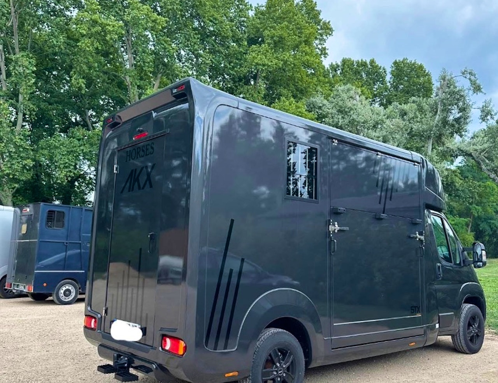

★★★★★
« Camion nickel, propriétaire à l'écoute et très professionnel. Je recommande vivement pour tous les cavaliers de la région. »
— Cavalière PACAVéhicule léger (VL) équestre tout équipé, disponible à la location pour vos concours, déplacements et balades. Réservation simple et rapide.
Chevaux
Suffisant
Disponible
Nous comprenons vos besoins et ceux de vos chevaux. Notre véhicule est entretenu avec le plus grand soin.
Véhicule régulièrement contrôlé, barres de poitrail et de recul, sol antidérapant pour un transport en toute sécurité.
Stalle spacieuse, bonne ventilation et suspension adaptée pour le bien-être de vos chevaux durant le trajet.
Consultez les disponibilités en ligne et réservez en quelques clics. Retrait et retour flexibles.

Un camion pour chevaux STX AKX de 2024, idéal pour transporter vos chevaux vers vos concours, balades ou déplacements. Consultez la fiche technique complète du véhicule ou vérifiez les disponibilités en temps réel.
Choisissez la formule qui correspond à vos besoins. Tous nos tarifs incluent l'assurance. Pour la grille complète avec options et suppléments, consultez nos tarifs détaillés.
Tarif en semaine
Tarif week-end & jours fériés
Plus de 9 locations réalisées avec une note moyenne de 4,9/5. Découvrez ce que pensent les cavaliers qui nous ont déjà fait confiance.
« Camion nickel, propriétaire à l'écoute et très professionnel. Je recommande vivement pour tous les cavaliers de la région. »
— Cavalière PACA« Véhicule très bien entretenu, facile à conduire avec le permis B. Tarifs honnêtes et assurance incluse, parfait pour un week-end de concours. »
— Client concours« Réservation simple, calendrier clair, véhicule propre et prêt à l'heure. Aucun souci de transport, les chevaux ont voyagé confortablement. »
— Cavalier loisirAvis vérifiés issus de notre annonce sur Horsicar.
Les réponses aux questions les plus fréquentes sur la location. Pour tout autre renseignement, contactez-nous directement.
Le permis B suffit. Notre camion STX AKX a un PTAC de 3 500 kg, ce qui le rend accessible avec le permis voiture classique. Il est recommandé d'avoir obtenu son permis depuis au moins 3 ans.
130€/jour du lundi au vendredi, 135€/jour le week-end et jours fériés. Chaque journée inclut 200 km, l'assurance tous risques et l'assistance Equitassistance. Voir la grille tarifaire complète.
Le camion STX AKX est conçu pour transporter 2 chevaux en configuration dos à la route, avec sol antidérapant, rampe arrière, sellerie aménagée et caméra de surveillance. Détails sur la fiche technique du véhicule.
Oui, l'assurance tous risques est incluse dans le tarif de location, avec une franchise maximale de 3 500€. Les dommages causés par les chevaux sont également couverts. L'assistance panne/accident Equitassistance est incluse.
Le camion est stationné aux Écuries de la Finca, 1340 Chemin de Bonnafoux, 13530 Trets. À 30 min d'Aix-en-Provence et 45 min de Marseille, avec un accès facile depuis l'autoroute A8.
Une caution de 3 500€ est demandée au retrait, sous forme de chèque. Elle est restituée au retour du véhicule en bon état. Voir nos conditions générales de location.
Réservez dès maintenant et assurez-vous de la disponibilité du véhicule pour votre prochaine sortie.